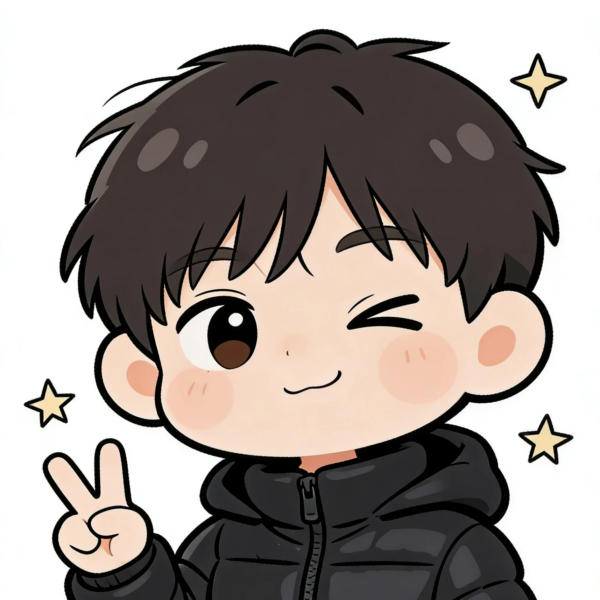
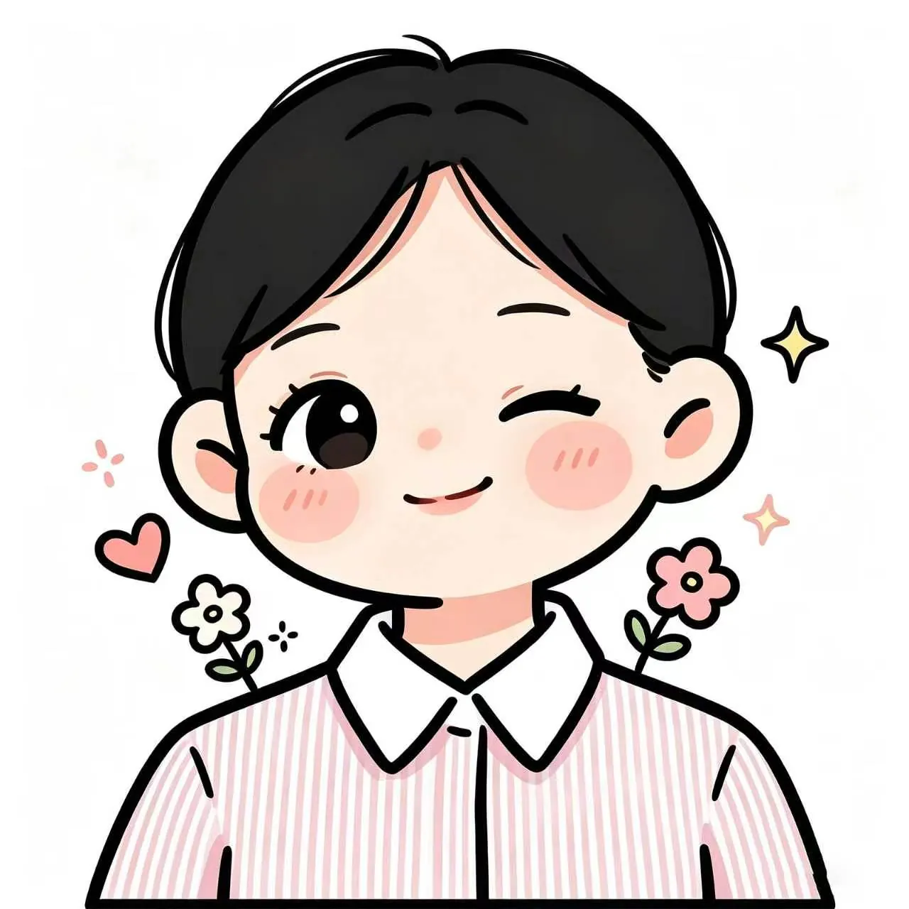

Team Attributions
SZPU-2026 Team Contributions, External Support, and Project Timeline
Team Member Contributions
Core team members and their specialized roles in the SZPU-2026 project
Yongjun Tang
Primary Investigator Project Oversight
(1) Analysis – He analyzed the literature supporting the project rationale and reviewed the experimental designs for completeness and scientific soundness. (2) Conceptualization – He provided constructive feedback, contributed valuable input throughout the experimental design cycle, and helped conceptualize and initiate the project. (3) Project Administration – He rigorously monitored submission milestones and coordinated overall project timeline management and execution across the team. (4) Writing – He reviewed documents on the Wiki and edited documents related to experimental files.
Lijun Zhang
Secondary PI Fundraising & Admin
(1) Project Administration – She tracked project progress and prompted the team to stay on schedule, while overseeing the soundness of each project activity. (2) Fundraising – She raised funds for project activities to support their smooth implementation.
Jie Xia
Wet Lab Student Leader
As a student leader, he coordinated various activities throughout the project. His responsibilities included, but were not limited to, conducting scientific background research for the project, tracking the completion of each experimental module, holding regular meetings to confirm each member's progress, and reviewing iGEM deliverables due by the deadlines.
Siqi Peng
Art & Design Student
(1) Conceptualization – She participated in conceptualizing the project's inspiration. (2) Visualization – She was responsible for most of the team's art and design work, established the Wiki's visual style and most of its illustrations, and led the finalization of the team logo and mascot.
Qi Xu
Web Developer Student
(1) Wiki Coding – He was responsible for the development of the team's entire Wiki, including building the Wiki framework, formatting content, and synchronizing and uploading it on GitLab. (2) Visualization – He participated in the design and implementation of interactive animations on the Wiki, as well as creative components that aligned with the team's concept. (3) Writing – He conducted basic review and editing of the Wiki text.
Aishi Zeng
Wet Lab Student
She was responsible for the gated recognition system module of the project. For module design, she searched for, reviewed, and analyzed relevant literature, and participated in a series of tasks in the gated recognition system experiments, including plasmid construction, screening, extraction, and validation of the system's recognition of H1N1 HA-related epitopes. She was also responsible for organizing the related experimental data and ultimately edited the text of the related experimental module on the Wiki.
Xiaozhen Su
Wet Lab Student
She was responsible for the experimental section on chassis cell optimization in the team. Following the core logic of "blocking endogenous input and relieving cell cycle arrest," she knocked out two related endogenous genes in yeast, recorded and processed the experimental results, and ultimately organized the related experimental data and edited the related content on the Wiki.
Chengxi Luo
Wet Lab Student
He was mainly responsible for the signal recognition module of the ECHOYeast system. He designed two systems, namely the FUS1-yEGFP system and the FUS1-MEL1 system, and validated the feasibility of both systems. In addition, he was responsible for data processing and logging for the signal recognition module, and ultimately edited the related content on the Wiki. He was also responsible for selecting and coordinating with offline physical stores for team materials, supporting the ordering of team uniforms and photography equipment, as well as related procurement tasks.
Yuelin Zheng
Wet Lab Student
She reviewed relevant literature, led the construction of the Gpa1/Gαq chimera, participated in the construction of the gating system, recorded and processed the related experimental data, and edited the corresponding content on the Wiki.

Rui Luo
Dry Lab Student
(1) Conceptualization – Provided creative ideas for the project promotion video and participated in conceptualizing the project's inspiration. (2) Investigation – He conducted a multiscale computational investigation of 17 nanobodies against influenza A HA. (3) Data Curation – He curated the computational data and code for the model. (4) Public Engagement – He was responsible for scheduling expert interviews for iHP and designing the interview questions. (5) Visualization – He contributed to the creative development of the Wiki, including creating related figures and developing artistic design concepts. (6) Writing – He wrote and edited the Model Wiki page.
Rouqing Chen
WIKI & Writing Student
Writing – She provided translation and translation proofreading for the team, and reviewed Wiki content for grammatical accuracy and logical soundness.
Yuquan Luo
HP Student
(1) Project Administration – He assisted the PI by reminding team members of all submission deadlines during group meetings. (2) Public Engagement – He participated in material preparation and itinerary planning for iHP, and recorded and summarized the takeaways from each Human Practices activity. (3) Hardware – He was responsible for the hardware component of the team's experiments, proposing the basic blueprint concept for the ECHOYeast device and designing the corresponding components. (4) Writing – He wrote and edited the Wiki pages for Hardware and iHP.
Yifan Gao
Wet Lab Student
Within the team, she assisted in the construction of the gated recognition system and contributed to part of the experimental data processing and analysis.

Ruoxi Li
WIKI & Writing Student
Writing – She provided translation and translation proofreading for the team, and reviewed Wiki content for grammatical accuracy and logical soundness.
Jianhua Zhou
Advisor Experimental Guidance
(1) Analysis – Provided effective suggestions and guidance on the team's experimental progress, advancing the team's experiments. (2) Writing – Reviewed the Wiki to ensure the soundness of its content and the rigor and scientific validity of the data.
Lizhen Zhu
Advisor Experimental Guidance
(1) Analysis – Provided targeted optimization and improvement methods when the team encountered experimental bottlenecks, advancing the team's experimental progress. (2) Writing – Reviewed the Wiki structure to ensure it met competition requirements.
Cross-Team Collaboration
Our team operates through integrated cross-functional collaboration. Wet lab members provide experimental data that informs dry lab modeling, while human practices activities are integrated into the project's design cycle. This interdisciplinary approach ensures that our engineering solutions are grounded in both scientific rigor and real-world applicability.
External Contributions
Organizations and individuals who provided valuable support to our project
[待补充 - 姓名/机构]
[待补充 - 具体贡献说明]
[待补充 - 姓名/机构]
[待补充 - 具体贡献说明]
[待补充 - 姓名/机构]
[待补充 - 具体贡献说明]
[待补充 - 姓名/机构]
[待补充 - 具体贡献说明]
[待补充 - 姓名/机构]
[待补充 - 具体贡献说明]
[待补充 - 姓名/机构]
[待补充 - 具体贡献说明]
Project Timeline
Key milestones and activities throughout our 2026 iGEM season — click bars for details